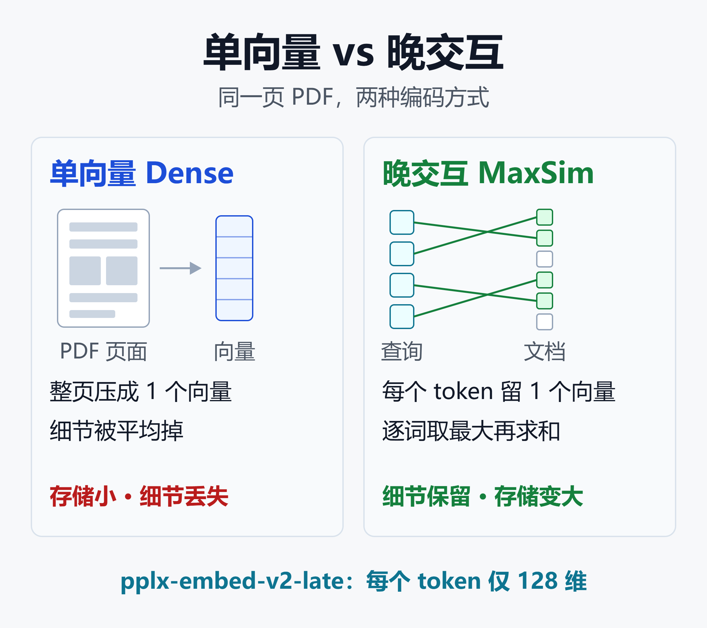
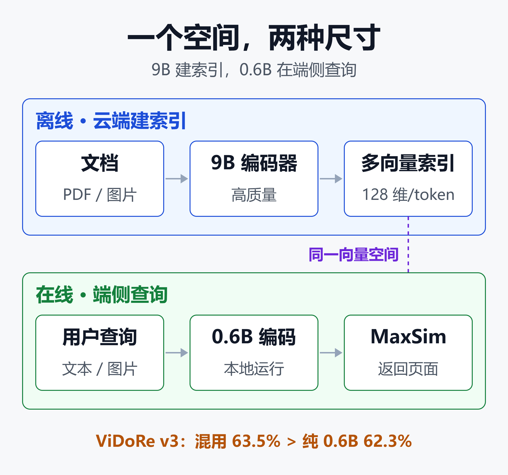

PDF 不用 OCR 也能搜：Perplexity pplx-embed-v2-late 原理、跑分与落地指南
10 月 7 日，Perplexity 在 Hugging Face 上开源了两个嵌入模型：0.6B 和 9B，统称 pplx-embed-v2-late，MIT 协议，可商用。
官方给出的成绩里，9B 在 Agent 式 PDF 问答基准 MADQA 上拿到 92.4%。0.6B 只有约 340M 激活参数处理图片，却能做到 90.1%。
但真正值得关注的不是分数，而是两个设计选择：页面直接当图片编码，不走 OCR；大小两个模型共享同一个向量空间，可以用 9B 建索引、用 0.6B 在笔记本甚至端侧设备上做查询。
这篇文章讲清楚它是什么、为什么这样设计、跑分强在哪弱在哪，以及企业 RAG 该不该换。
一、pplx-embed-v2-late 是什么
这是 Perplexity 今年第三批开源嵌入模型。2 月发布的 pplx-embed-v1 和 context-v1 是纯文本模型，9 月底的 v2-context-9b-preview 主打上下文感知分块。这次的 v2-late 第一次把图片和页面纳入进来。
名字里的 late 指 late interaction（晚交互），也就是 ColBERT 那一路的多向量检索。
两个尺寸的基本参数：
| 项目 | 0.6B | 9B |
|---|---|---|
| 总参数 | 594M | 9B |
| 激活参数 | 文本约 240M | 7.4B |
| 底座 | Qwen3.5-0.8B 剪枝 | Qwen3.5 |
| 输出 | 每 token 128 维 | 每 token 128 维 |
| 定位 | 查询端、端侧 | 建索引 |
几个容易忽略的细节：
- 0.6B 是把 Qwen3.5-0.8B 剪到 12 层文本层得来的，处理图片时激活参数约 340M。
- 两个模型都能吃三类输入：文本、图片、渲染后的 PDF 页面。但单次输入不能图文混合。
- 运行依赖
sentence-transformers >= 6.0.0与transformers >= 5.4.0。 - 发布的权重是 F32，下载体积是 bf16 的两倍。按 bf16 估算，0.6B 权重约 1.2GB，9B 约 16 到 18GB（MarkTechPost 的估算值）。
- 托管 API 已在计划中，但目前还没上线，现阶段只能自己部署。
二、为什么要"每个 token 一个向量"
传统嵌入模型（dense，单向量）把一整段文本或一整页压成一个向量，检索时算查询向量和文档向量的余弦相似度。好处是存储小、检索快；坏处是细节被平均掉了。
一页财报里有标题、表格、脚注和图表。用户问"第三季度华东区毛利率"，单向量很难同时对上"第三季度""华东""毛利率"三个分散在页面不同位置的信息。

如图所示，单向量把整页压成 1 个向量，存储小但细节丢失；晚交互给每个 token 保留一个向量，查询里的每个词去文档里找最相似的那个 token，再把这些最大值加起来，细节保留但存储变大。pplx-embed-v2-late 的每个 token 向量只有 128 维。
MaxSim 打分怎么算
MaxSim 的逻辑可以用几行 numpy 表达：
import numpy as np
def maxsim(q, d):
# q: [查询token数, 128]，d: [文档token数, 128]
# 向量已做 L2 归一化
sim = q @ d.T # 两两相似度矩阵
return sim.max(axis=1).sum()
每个查询 token 只看它在文档里的"最佳搭档"。这让查询的不同部分可以匹配文档的不同部分，正是 Perplexity 博客强调的"保留单向量会丢掉的细节"。
页面当图片编码：省掉 OCR
pplx-embed-v2-late 把 PDF 页面渲染成图片直接编码，图片 patch 也变成 token 向量。这条路线由 ColPali 开创，ColQwen、NVIDIA Nemotron ColEmbed 等模型跟进。
对企业来说，这意味着不必先跑 OCR、版面分析、表格还原再切块。扫描件、幻灯片、带图表的报告都可以直接入库。
这不等于 OCR 没用了。如果下游大模型需要读文字原文，你仍然要 OCR 或 VLM 解析。省掉的是检索这一环对 OCR 的依赖。
三、共享向量空间：大模型建索引，小模型做查询
这是本次发布最有工程价值的设计。
通常换嵌入模型就得重建整个索引，因为不同模型的向量空间不兼容。pplx-embed-v2-late 的 0.6B 和 9B 都从同一个 18B 教师模型蒸馏而来，采用 LEAF 式的 token 级蒸馏，两个学生模型被训练成输出同一个空间里的向量。

如图所示，离线阶段在云端用 9B 编码文档、建多向量索引；在线阶段用 0.6B 在本地编码查询，直接对 9B 建的索引做 MaxSim 检索。官方数据：9B 索引配 0.6B 查询，ViDoRe v3 图像检索得 63.5%，高于两端都用 0.6B 的 62.3%，而查询成本完全一样。
在文本任务上，官方称这种混用能以 0.6B 的查询成本，追回 9B 与 0.6B 之间约一半的质量差距。
为什么这件事重要
- 索引成本只付一次：文档编码是离线批量任务，用最好的模型做一次即可。
- 查询成本决定规模：线上 QPS 高的场景，每次查询都跑 9B 很贵，0.6B 便宜得多。
- 查询可以完全本地：0.6B 能在笔记本或小 GPU 上跑，敏感查询不用出内网。
- 升级更平滑：先上 0.6B 全链路，后续把索引换成 9B 重建，查询端不用动。
四、跑分：强在哪，弱在哪
以下数字全部来自 Perplexity 官方公告，经 MarkTechPost 整理。技术报告尚未发布，所有分数均为自报，请当作参考上限看待。
强项
| 基准 | 0.6B | 9B |
|---|---|---|
| MADQA 准确率 | 90.1% | 92.4% |
| 领域文本 72 项 | 78.0% | 81.3% |
| Q2D-Web 召回 | 73.6% | 74.8% |
| BrowseComp+ | 未公布 | 64.0% |
逐项解读：
- MADQA（Agent 式 PDF 问答）：9B 的 92.4% 超过 Mixedbread 检索器的 88.9%，但不及 Mixedbread Agentic Search 的 93.4%。
- 领域文本检索（72 个任务，nDCG@10）：9B 领先所有对比模型 1.6 个百分点；0.6B 只比 gemini-embedding-2 低 0.3 个百分点。
- Q2D-Web（Recall@1000）：两个尺寸都超过此前最佳的 69.3%。
- BrowseComp+：64.0% 是 9B 的最低分，但比最好的单向量模型高 8.7 个百分点，比次优的 ColBERT 类模型高 4.9 个百分点。
短板
| 基准 | 0.6B | 9B |
|---|---|---|
| ViDoRe v3 图像 | 62.3% | 65.2% |
| ViDoRe v3 文本版 | 61.2% | 64.7% |
- ViDoRe v3 图像检索：9B 不是第一，腾讯 EVIE 分数更高；0.6B 与 nemotron-colembed-v2-8b 只差 1.2 个百分点，考虑到参数量差了十几倍，这个成绩不错。
- ViDoRe v3 Markdown 版：0.6B 的 61.2% 是整份成绩单里最低的一项，但两个尺寸都超过了所有对比的外部模型。
- 纯图片检索是真正的差距：Gemini Embedding 2 在 MIRACL-Vision 上胜过 9B，在 PPLX-Q2I 上领先 2 个百分点。
一句话总结：文档类和 Agent 检索类任务领先，纯图像检索不是最强。
五、和主要对手怎么比
多模态嵌入赛道今年很拥挤。按维度拆开看，避免一张大表在手机上看不全。
向量宽度与存储
- pplx-embed-v2-late：每 token 128 维。
- nemotron-colembed-v2-8b：每 token 4096 维。
- 其他开源多向量模型：常见 2048 维。
- Gemini Embedding 2：单向量，128 到 3072 维可选。
在多向量模型里，128 维比对手窄 16 到 32 倍。多向量方案最大的痛点就是索引体积，这一点直接决定能不能上生产。
输入模态
- pplx-embed-v2-late：文本、图片、页面渲染图。
- nemotron-colembed-v2-8b：文本查询、页面图片。
- Gemini Embedding 2：文本、图片、视频、音频、PDF，闭源方案里模态最全。开源阵营里模态最全的是下一节的 EmbeddingGemma 2。
部署与协议
| 模型 | 部署 | 协议 |
|---|---|---|
| pplx-embed-v2-late | 自建，0.6B 可端侧 | MIT |
| Nemotron ColEmbed v2 | A100/H100 | CC-BY-NC-4.0 |
| Gemini Embedding 2 | 仅 Google API | 闭源 |
Nemotron 的 CC-BY-NC 协议禁止商用，Gemini 只能走 API、数据要出境。对国内需要私有化部署的企业，MIT 协议加端侧可跑，是 pplx-embed-v2-late 最实在的优势。
六、另一条路：Google EmbeddingGemma 2
10 月 6 日，也就是 pplx-embed-v2-late 发布的前一天，Google DeepMind 开源了 EmbeddingGemma 2。它的路线和 Perplexity 几乎相反：不做多向量，把文本、代码、图片、视频、音频全部压进一个 768 维的单向量。协议是 Apache 2.0，可商用。
基本规格
- 底座是 Gemma 4，全模态版本共 740M 参数。
- 其中文本和代码编码器 270M，视觉编码器 170M，音频编码器 300M。
- 输出 768 维，可用 MRL（套娃表示）截断到 512、256 或 128 维。
- 上下文 8192 token，各模态共享。MarkTechPost 的换算是约 29 张图、58 帧视频或 5.5 分钟音频。
- 文本和代码支持 100 多种语言，单次输入可以图文视频交错混合。
- 依赖
sentence-transformers >= 6.1.0。
模块化加载
同一个检查点，按需加载编码器，组合出四种配置：
- 文本和代码：270M
- 文本、图片、视频：约 440M
- 文本和音频：约 570M
- 全模态：740M
四种配置输出同一个向量空间。用 270M 文本配置编码的查询，可以去匹配 740M 全模态配置建的索引。这和 pplx 的"大小模型共享空间"思路相近，实现方式不同：Perplexity 是两个蒸馏出来的模型，Google 是同一份权重的不同加载方式。据媒体报道，纯文本配置在手机上约占 191MB 内存。
跑分与截断代价
Google 没有给出绝对分数，官方只说 MTEB（Code）比第一代高 14%，多语言文本精度与第一代持平。Hugging Face 上的社区讨论引用模型卡数字，MTEB 约 61.36，第一代约 61.15。
目前官方没有公布它在 ViDoRe、MADQA 上的成绩，两款模型暂时没有同基准的直接对比。
MRL 截断的官方数据如下（bf16 存储）：
| 维度 | 存储/百万向量 | 多模态保留 |
|---|---|---|
| 768d | 1465MB | 基线 |
| 256d | 488MB | 约 95% |
| 128d | 244MB | 约 75% |
纯文本和代码在 256d 时接近基线，128d 时约保留 90%。官方也提醒，128d 多模态上线前一定要自测。
Analytics Vidhya 做过一次小语料实测，只能当参考，不是基准：
- 文本 256d 与 768d 的 Top-1 和 MRR 完全一致。
- 图片跨模态匹配有明显间隔，正确查询 0.7026，最接近的错误查询 0.5872。
- 音频几乎没有区分度，正确查询 0.6466，错误查询 0.6329，找不到可用阈值。
- sentence-transformers 默认输出 float32，实际索引是官方 bf16 数字的两倍。
和 pplx-embed-v2-late 怎么选
| 维度 | pplx-embed | EmbeddingGemma 2 |
|---|---|---|
| 向量形式 | 每 token 128 维 | 单向量 768 维 |
| 支持模态 | 文本、图片、页面 | 文本图片视频音频 |
| 图文混合输入 | 不支持 | 支持 |
| 最小配置 | 0.6B | 270M（文本） |
| 每页存储* | 约 256KB | 约 1.5KB |
| 协议 | MIT | Apache 2.0 |
*每页存储为示意估算：pplx 按每页约 1000 个 token、fp16 计算；EmbeddingGemma 2 按 768 维 bf16 计算。两者相差约两个数量级。
几点判断：
- 细节密度的文档（财报表格、带脚注的标书、论文图表）：MaxSim 逐词匹配能保留页面细节，从原理上看 pplx 更占优。这是机制层面的判断，具体差距要在自己的文档上测。
- 海量内容、存储敏感、要覆盖视频和音频：EmbeddingGemma 2 的单向量可以直接用任何向量库，存储小两个数量级。
- 手机、笔记本等端侧：270M 文本配置比 0.6B 更轻，但只做文本检索时两者差别不大。
- 音频检索：目前只有它支持，但小规模实测区分度弱，要用自己的数据验证。
也可以考虑两阶段组合：先用单向量粗召回候选，再用 pplx 的 MaxSim 精排。这是一个值得尝试的工程思路，效果需要在自己的数据上验证。
七、落地指南：什么场景值得上
适合的场景
- 视觉文档检索：PDF、幻灯片、扫描报告、带大量图表的研报和标书。这是它的主场。
- 低延迟检索：云端 9B 建索引，端侧或边缘节点用 0.6B 查询。
- Agent 式 RAG：在大批 PDF 或网页上让 Agent 多轮检索，MADQA 和 BrowseComp+ 的成绩说明它在这类任务上有优势。
不太适合的场景
- 纯图片搜索（以图搜图、商品图检索）：Gemini Embedding 2 和 EVIE 更强。
- 需要视频、音频的场景：它不支持，可以看上一节的 EmbeddingGemma 2。
- 超大规模纯文本库且预算紧张：单向量 + BM25 混合检索仍然性价比更高。
先算存储账
多向量的成本要先算清楚。下面是示意估算，假设一页编码后约 1000 个 token，按 fp16 存储：
- 128 维：每 token 256 字节，每页约 256KB，100 万页约 256GB。
- 4096 维：每 token 8KB，每页约 8MB，100 万页约 8TB。
- 1024 维单向量：每页 2KB，100 万页约 2GB。
实际 token 数取决于页面分辨率和模型的图片切分方式，请以模型卡和实测为准。结论不变：128 维让多向量从"实验室方案"变成了"可以认真考虑的方案"，但它仍比单向量贵两个数量级。
工程上的几个建议
- 先小后大：先用 0.6B 跑通全链路、验证召回，再决定要不要换 9B 重建索引。
- 两阶段检索：先用单向量或 BM25 粗召回几百个候选，再用 MaxSim 精排，可以大幅压低存储和计算。学界今年也有大量池化、压缩多向量索引的研究可借鉴。
- 选支持多向量的向量库：MaxSim 需要向量库原生支持多向量字段，或者在应用层实现精排。
- 用自己的数据评测：自报分数不等于你的业务分数，拿 200 到 500 条真实查询做一次离线对比再决策。
安装依赖的最低版本：
pip install "sentence-transformers>=6.0.0" \
"transformers>=5.4.0"
具体的加载与编码代码请以 Hugging Face 模型卡为准，多向量模型在 sentence-transformers 6 里有专门的接口。
八、局限与风险
- 分数未经独立复现：技术报告还没发布，训练数据、评测细节都不透明。
- 索引随文档长度增长：每 token 一个向量，长文档、高分辨率页面会让存储线性膨胀。
- 单次输入不能图文混合：图文混排的查询需要拆开处理。
- 权重格式偏大：官方权重是 F32，部署前需要自行转 bf16 或量化。
- API 尚未上线：现在只能自建，需要 GPU 资源和运维能力。
小结
pplx-embed-v2-late 不是在所有榜单上都第一，但它把多向量检索往生产可用推了一大步：
- 128 维的窄向量，把多向量索引体积压到对手的 1/16 到 1/32；
- 页面直接当图片编码，检索环节不再依赖 OCR；
- 0.6B 和 9B 共享向量空间，"大模型建索引、小模型做查询"第一次成为开箱即用的选项；
- MIT 协议，可商用、可私有化。
同一周发布的 Google EmbeddingGemma 2 走了另一条路：单向量、覆盖五种模态、存储小两个数量级。两者不是替代关系。前者押注"文档检索要保留细节"，后者押注"一个小模型管所有内容"。
如果你的知识库里堆满了 PDF、幻灯片和扫描件，现在值得拿 pplx-embed-v2-late 做一次 POC。如果你要覆盖视频、音频，或者存储预算很紧，先看 EmbeddingGemma 2。无论选哪个，都用自己的数据测一遍。
免责声明
本文基于 Perplexity 官方公告及公开媒体报道整理，文中跑分均为厂商自报数据，存储估算为示意性计算。不构成任何技术选型或投资建议，请以官方技术报告和实际测试结果为准。
参考来源
- Perplexity 官方博客 —— Multimodal embeddings beyond a single vector
- Perplexity 社区 —— We're releasing pplx-embed-v2-late
- Hugging Face —— Perplexity pplx-embed-v2 模型合集
- Hugging Face —— pplx-embed-v2-late-0.6b 模型卡
- MarkTechPost —— Perplexity AI Releases pplx-embed-v2-late: A 0.6B Edge Model and a 9B Model Scoring 92.4% on MADQA
- AI Weekly —— Perplexity Open-Sources pplx-embed-v2-late, 92.4% on MADQA
- Perplexity 官方博客 —— Contextual embedding beyond the gold passage
- arXiv —— Diffusion-Pretrained Dense and Contextual Embeddings（pplx-embed-v1 技术报告）
- arXiv —— LEAF 知识蒸馏方法论文
- Google DeepMind —— EmbeddingGemma 2 is a best-in-class open model for natively multimodal embeddings
- Google Developers Blog —— EmbeddingGemma 2: The Developer Guide
- Google AI for Developers —— EmbeddingGemma 2 model card
- Hugging Face —— google/embeddinggemma-2
- Hugging Face 社区讨论 —— google/embeddinggemma-2 · V2 = V1 + multimodal
- MarkTechPost —— Google DeepMind Releases EmbeddingGemma 2, a 740M Open Multimodal Embedding Model Built on Gemma 4
- Analytics Vidhya —— EmbeddingGemma 2: Text, Code, Images, Video and Audio in One Vector Space
- DEV Community —— EmbeddingGemma 2 puts multimodal search on a phone
- Hugging Face 博客 —— Multi-Vector (Late Interaction) Embedding Models with Sentence Transformers
- arXiv —— Scaling Multi-Vector Visual Retrieval with Training-Free Pooling and Multi-Stage Search
- Mixpeek —— Late Interaction Retrieval: How ColBERT, ColPali, and ColQwen Search